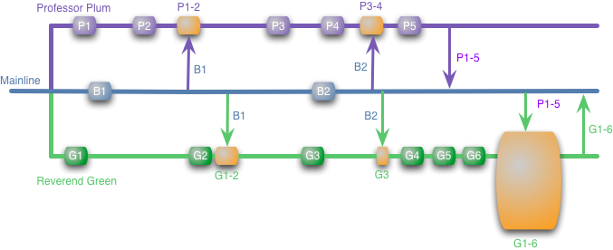
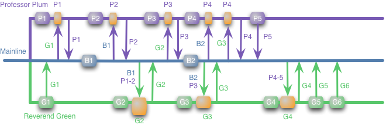

Adoptando Continuous Delivery
Por Marcelo Oliveira y Rodrgo Vallejo
Marcelo dos Santos de Oliveira
marcelo.oliveira@thoughtworks.com@blackbnu
Blog
Rodrigo Vallejo
rvallejo@thoughtworks.com@rxvallejoc
ThoughtWorks
Una comunidad de individuos apasionados cuyo propósito es revolucionar el diseño de software, creación y entrega, mientras se aboga por cambios en la sociedad.
Con que frecuencia hacen liberaciones?
- Una vez por año o más?
- Al menos una vez por año?
- Al menos una vez por mes?
- Al menos una vez por semana?
- Al menos una vez por día?
Continuous Delivery

Que es?
Asegurarse de que el software está listo para ser entregado a lo largo de su ciclo de vida - cualquier build puede ser entregado al cliente utilizando un simple boton mediante procesos automatizados en cuestión de segundos o minutos
Por que adoptar?
- Reducir costos , tiempo y riesgo entregando cambios al usuario de manera incremental.
- Entregar la funcionalidad funcionalidad que le da valor de negocio a traves de feedback rápido sobre una hipótesis
Reduciendo el tamaño de los release


Princípios
- Crear processo repetitivos y confiables para hacer un release de software
- Automatiza todo lo que sea posible ( Usa personas para tarea de alto valor)
- Mantenga todo en sistema de control de versiones
- Listo significa entrado
- Todo el equipo es responsable de la entrega
Práticas
- Compilar los artefatos solo una vez
- Pruebas Automatizadas en los todos los niveles (Pruebas de Unidad, Acceptacion , Integracion, etc)
- Hacer el despliegue de la misma manera en todos los ambientes
- Pruebas de Humo en cada despliegue
- Mantenga todos los ambientes similares
- Si algo falla, para todo lo que esta haciendo
Continuous Delivery
!=
Continuous Deployment
Como adoptar?
Proceso
Funcionalidades

Iteracion clasica

Interacion con checkpoint

Colaboracion constante
- Cliente
- Desarrollador
- QA
- Operaciones
Confianza en el Código
Pair Programming

Feedback rapido sobre los cambios en el código

Integracion Contínua
Pequeños y frecuentes commits

Herramientas:
Radiador de informacion
DIY Build Radiator
Homebrew build status traffic light

Pruebas Funcionales
- Construir una funcionalidad que le da valor al usuário
- Colaboracion entre cliente/dev/qa
- Pruebas de Regresón
Pruebas de Unidad
- Construir un funcionalidad de la manera correcta
- Feedback técnico rápido y preciso
Herramientas:
 An Overview of Agile Testing
An Overview of Agile Testing

Continuous Delivery of this blog
Automatiza Todo!
Automatizacion del build
Lo que hacemos: compilamos, creamos el artefacto y ejecutamos las testes
Automatización del deployment
Como hacemos: ruby deploy.rb APP-NAME 1234 PROD
server_name = {
LOCAL: "localhost",
QA: "qaserver",
PROD: "prodserver"
}
LOCAL: "localhost",
QA: "qaserver",
PROD: "prodserver"
}
Herramienntas:
Diferentes streams, mismos codebase
Branching Strategies!

Feature branch

Merge hell
Feature Branching is a poor man's modular architecture, instead of building systems with the ability to easy swap in and out features at runtime/deploytime they couple themselves to the source control providing this mechanism through manual merging.
Dan Bodart
Continuous Integration
Trunk Based Development

Links úteis
Feature toggles
Escondiendo Funcionalidades
- 'Work in progress'
- Features inestable
- Estratégia de negócio
Como??
if (ToggleService.GetValue("super.new.feature"))
renderTemplate("html/new/petStore.html");
else
renderTemplate("html/current/petStore.html");
Como??
- Static config file
- Variable de ambiente
- Servicio externo
Branch por
abstracion
Cambio de larga escala de modo incremental

Otras consideraciones
Database Deployment
Herramientas:
Modularizacion
Técnicas de deploy para producto
- Blue/Green deployment
- Canary release
- Dark launching
Infrastructure as code
Ferramentas:
Ferramentas:
Monitor and Logging
Herramientas:
Ejemplos
Lecturas Sugeridas


Preguntas?
Obrigado!
http://acd.herokuapp.com/
Marcelo Oliveria
marcelo.oliveira@thoughtworks.com
Rafael Magrin
rmagrin@thoughtworks.com